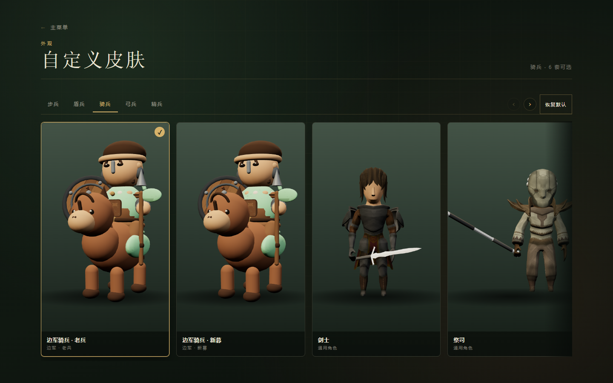

美术路线取舍
问题不在"生成得不够好"。现在同时跑着四条互不兼容的路线，而且渲染没有合批：场上一个兵团都没有，一帧就要提交 1606 次绘制。再换一套美术，也是挂在同一根管子上。
先看数字
| 场景 | 画面里有什么 | 一帧 draw call | 折算 |
|---|---|---|---|
?scene=units | 15 个程序化小兵 | 650 | 约 43 次/人 |
?scene=buildings | 24 座建筑 | 157 | 约 6.5 次/座 |
?scene=sprite | 4 个序列帧单位 | 22 | 约 5 次/个 |
| 对局 frontier01 | 开局，零兵团 | 1606 | — |
| 对局 frontier01 | 2 个兵团共 16 人 | 1987 | 约 24 次/人 |
| 对局 frontier01 | 同一局面，8 人换成冒险家骑士 | 1612 | 约 1.6 次/人 |
Chrome 无头实测，拦 WebGL 绘制调用按帧统计，取中位数。数字含一次阴影 pass。draw call 与显卡强弱无关，同一台机器上换显卡也不会变。
一个 20 面的小兵和一个 2 万面的小兵，在这一项上一样贵。所以"模型做细一点"和"动作帧多一点"从来不是性能问题的解，反而都在加价。
四条路线同时存在
| 路线 | 代码与资产 | 风格 | 状态 |
|---|---|---|---|
| 程序化 Q 版 | unit-models.ts，五兵种三变体 | 三头身，圆润，与建筑同源 | 造型粗糙，但最协调 |
| 边军 GLB | assets/characters/frontier-*.glb，默认皮肤 | 七头身，偏写实 | 每兵团限 8 人 |
| AI 序列帧 | public/sprites/，8 方向 × 7 帧 | 七头身，半写实 | 单张 1792×2048 |
| Kenney 低模 | 城堡、城镇、自然 | 平涂低模，四头身语境 | 项目里最稳的一套 |

自己的提示词文档写得很清楚：stylized semi-chibi build about four heads tall。而交付回来的序列帧是七头身，头身比、披风长度、脚底线逐帧都在漂。规格从一开始就没被执行，问题不在模型能力。
为什么一直是"没进展"
- 每条新路线都是追加，不是替换。四条语言同时在线，无论点开哪个页面都能看见矛盾。
- 用生成的方式做动作帧，帧与帧之间没有骨骼约束。头会变大小、脚会离地、刀会换手，逐帧挑选也拼不出一个循环。
- 为了压性能，把兵团从 20 人砍到 8 人。观感先输一局，性能也没救回来，因为大头根本不在人数上。
- 该省的没省：场景里地形、道路、据点、装饰、单位全在各自提交；不该省的省了：人数、动作数量、剪影辨识度。
五条可选路线
| 方案 | 做法 | 质量上限 | 性能 | 成本 |
|---|---|---|---|---|
| A 专业角色 + 合批 | CC0 角色包，共享骨架与动作，烘成顶点动画贴图后实例化 | 模型与动作都由专职作者决定 | 1 到 2 次/人，兵团回 20 人 | 2 到 3 天 |
| B 真 3D 渲序列帧 | 同一角色在 Blender 按 28° 俯角八方向渲帧 | 同上，循环完美 | 5 次/个，可合批到 1 次 | 管线已有一半，3 天 |
| C 程序化 Q 版做深 | 现有骨架改按部位实例化，补攻击与受击姿态 | 可爱但简单，天花板明确 | 30 次/兵团，与人数无关 | 1 天，零采购 |
| D 继续生成 3D 与动作 | 图生三维，或让模型直出动作 | 不可编辑，比例与帧间漂移 | 不变 | 已经付过两次 |
| E 远景色块化 | 远焦用阵营色块与图标，近焦才出模型 | — | 极低 | 2 天，战场像棋牌 |
建议
主线走 A，兜底留 C，B 只在低端设备上做远景，D 停掉。
三条理由。第一，模型和动作由真正做过这两件事的人交付，规格不会在交付环节漂掉，这是"达不到要求"最直接的解法。第二，整套用同一作者，调色、比例、材质工艺一致，这比头身比更能保证观感统一。第三，渲染方式换掉之后，兵团能回到 20 人，性能反而比现在好一个数量级。
候选包是 KayKit 冒险家包，已经下载验证：CC0，5 个低模角色，共享 41 骨骨架，每个角色 76 段动作，单张材质，glTF 格式，正好落在现有 GLB 管线里。零成本对照是盘里已有的 Quaternius 全家桶：同样的零重定向，但是七头身，且造型只有两层，够不上精良。
第一步 换角色，回人数
接 KayKit，替换默认皮肤，兵团上限从 8 恢复到 20。验收：一屏 6 个兵团 120 人，单位部分不超过 300 次绘制，当前同样人数约 2900 次；单位和建筑并排看不出两个游戏。
第二步 合批
把动作烘成顶点动画贴图，GPU 采样，实例化绘制。验收：120 人不超过 3 次 draw call，单帧动画的 CPU 开销低于 0.5 毫秒。若不想动资产，备选是按部位实例化，现有程序化骨架也能吃这套，20 人兵团从 800 多次降到 30 次以内。
场景本身是另一个数：开局零兵团已经 1606 次提交，地形、道路、装饰、阴影 pass 都在各算各的。这一步顺手把场景压到 500 以内，否则单位省下来的会被场景吞掉。
第三步 动作扩容
待机、行走、攻击、受击、死亡五个剪辑，12 帧每秒，1.55 米身高。验收：并排播放不滑步、不穿模，24 到 40 像素高度下剪影能分清兵种。
已经接进来一个
KayKit 冒险家包已经从 GitHub 拉下来并验证过：CC0，5 个角色，每个角色 76 段动作，一套骨架，单张材质。先用骑士做试点，走完整条转换链。
| 项 | 原始包 | 转换后 |
|---|---|---|
| 文件 | Knight.glb 3.5 MB | 2.4 MB |
| 网格与材质 | 15 个网格，1 张材质 | 1 个网格，1 张材质 |
| 动作 | 76 段 | 6 段，重命名为 idle / walk / attack / death / hit / block |
| 面数与顶点 | — | 5296 面，4957 顶点 |
| 蒙皮 | 6 块身体网格各自蒙皮 | 合并成 1 块，权重和 1.000，最大骨骼索引 22 / 41 |
| 装备 | 头盔、披风、剑、盾是挂在骨骼上的静态网格 | 焊进同一块蒙皮，各按父骨骼满权重绑定 |
同一局面实测：8 人兵团从 381 次绘制降到 13 次，单人从约 48 次降到 1.6 次。
自研 GLB 为什么会坏
frontier-infantry-A.glb 里有 skins、20 根骨、4 段动画，但 49 个网格节点没有一个带 skin。动画只改了骨骼矩阵，网格从来没绑定，所以模型根本不会形变。49 个网格也意味着单个小兵 48 次绘制，这就是兵团被压到 8 人的真正原因。
这不是模型问题，是导出环节把蒙皮关系丢了。再修一次导出也只能救回这一个文件，救不回流程。
更先进的做法
| 层 | 做法 | 解决什么 |
|---|---|---|
| 资产 | glTF-Transform 做标准化：合并网格、焊装备、重命名剪辑、删无用动画，导出前后各跑一次校验 |
把"骨骼没绑上"这类问题挡在运行时之外，不再手写导出器 |
| 渲染 | 顶点动画贴图加实例化：6 段动作烘成贴图，GPU 采样，InstancedMesh 一次绘制 |
120 人 1 次绘制，CPU 不碰骨骼，兵团可以回到 20 人 |
| 场景 | 地形、道路、装饰改用 BatchedMesh 或按材质实例化 |
把开局 1600 次绘制压到 500 以内 |
资产这一层现在已经跑通，脚本留在 .work/pipeline，验证过再搬进 tools/。渲染这一层还没有做，是下一步的主线。
还没解决的三件事
- 骑兵没有马。冒险家包里全是步战角色，骑兵要么保留程序化战马，要么另找一匹马。
- 队伍色。骑士只有一张材质，现有机制靠材质名
team_*染色，对它无效。需要调色板替换或者一张遮罩。 - 五个兵种的配对。骑士、野蛮人、盗贼、兜帽盗贼、法师，和步兵、盾兵、弓兵、精兵对得上，骑兵对不上。
盘里已经有什么
查了 resource/，下面这些既不用买，也不用生成。
| 包 | 许可 | 内容 | 能拿来做什么 |
|---|---|---|---|
| Universal Animation Library 1 + 2 | CC0 | 86 段动作，glb，UE 命名骨架 | 待机、行走、疾跑、挥砍、受击、死亡、举盾、格挡 |
| KayKit Medieval Builder 1.0 | CC0 | 226 个 glb | 建筑、城墙、道具，可整体换掉现在的 Kenney 拼装 |
| Modular Character Outfits - Fantasy | CC0 | 24 套服装部件，glTF 与 FBX | 一套身体拼出五个兵种 |
| RPG Characters Nov 2020 | CC0 | 6 个角色，FBX | 已在用，剑士与祭司那批 |
| Free Medieval 3D People | CraftPix 条款 | 28 个 FBX | 授权不是 CC0，先别进资产包 |
只缺一个：Quaternius 的 Universal Base Characters，CC0，免费。它和上面那 86 段动作、24 套服装共用同一副骨架，身体、衣服、动作三件套凑齐之后不需要任何重定向。但按下面的分层判据，它属于"干净但平淡"，是零成本的兜底，不是精良的解。
没有美术怎么判断好坏
头身比不再是门槛，改判"精良"。四条都能写成脚本，不靠眼睛：
- 同屏：角色和建筑放进同一张 1280×720 截图，缩到 32 像素高，剪影还能认出兵种。
- 分层：近景截图里，五官、护甲、布料至少三层，接缝不露底。盘里的 Quaternius 角色只有两层，脸是平的，够不上精良。
- 动作：有预备、发力、收势三段，循环首尾相接。正弦摆动一眼能看出来。
- 滑步：行走循环里，脚底在同一帧网格内的位移不超过 2 像素。
第二条是"精良"和"能用"的分界。第一、三、四条决定它在战场上像不像活的。
跨作者的包不要混骨架
同作者的包能直接互换，是因为骨架命名一致。KayKit 和 Quaternius 是两套命名，混用就要做重定向，那是三天的活，不是十分钟。选一套用到底。
| 候选 | 身体 | 动作 | 重定向 | 风格 |
|---|---|---|---|---|
| Quaternius 全家桶 盘里已有，只缺基础角色 |
Universal Base Characters | UAL 86 段 | 不需要 | 七头身，干净但平淡 |
| KayKit 冒险家 需要下载 |
4 个角色 | 自带动作库，清单待核对 | 不需要 | 四头身，工艺完整，和已有建筑同源 |
接入顺序
- 下载 Universal Base Characters 与 KayKit 冒险家，各跑一遍清单。半天。
- 两边各出一个人，同机位截图，按上面四条判据打分。半天。
- 选中那套按材质合并网格，导出单个 GLB 带五个剪辑。现在边军单角色是 49 个网格，这是每人 24 次绘制的主因。一天。
- 接进现有 unit-glb 管线，默认皮肤切过去，兵团回 20 人。半天。
规格合同
| 项 | 取值 | 判据 |
|---|---|---|
| 造型 | 1.55 米，头身比不设限 | 五官、护甲、布料分层齐全 |
| 材质数 | 每角色不超过 2 | 每人不超过 2 次 draw |
| 三角面 | 每角色不超过 6000 | 冒险家骑士实测 5296 |
| 贴图 | 单张不超过 2048 见方，仅 albedo | 不烘焙光影与 AO |
| 动作 | 5 个剪辑，12 到 20 帧，12 帧每秒 | 循环首尾相接 |
| 兵团规模 | 20 人 | 全场 120 人可用 |
| 渲染预算 | 单位 3 次，全场 500 次以内 | HUD 挂计数器 |
止损清单
- 不再用生成的方式做角色与动作。新角色先过"32 像素剪影"和"近景三层"两关。
- 不再做八方向 2048 见方图集，单张解码就是 15 MB 显存。
- 不再为单兵做高光、法线、AO，士兵在屏幕上只有 24 到 40 像素。
- 不再逐件生成建筑，同族三级同框交付。
- 序列帧入口保留，但不作为默认皮肤。
今天就能开工
- 把冒险家的另外四个角色按同一脚本转一遍，配到步兵、弓兵、精兵上。
- 把默认皮肤切回程序化、兵团上限回 20，十分钟看到观感差异。
- 在场景里挂一个 draw call 计数器，接到调试位，之后每条改动都有数。
第 2 条会立刻让战场变密，但也会立刻暴露"程序化模型不够好看"。这个对比正是选 A 还是 C 的依据，先看再决定，比继续做第四套资产便宜。